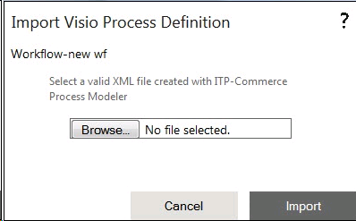

No
This window opens when you select the Import from Visio option from the Tools menu.

Import Visio Process Definition window
You can use the following controls to import a process definition created with the ITP-Commerce Process Modeler for Visio.
Note: The import routine maps Visio BPMN activities to native AVEVA Work Tasks activities. You should configure the necessary properties after import.